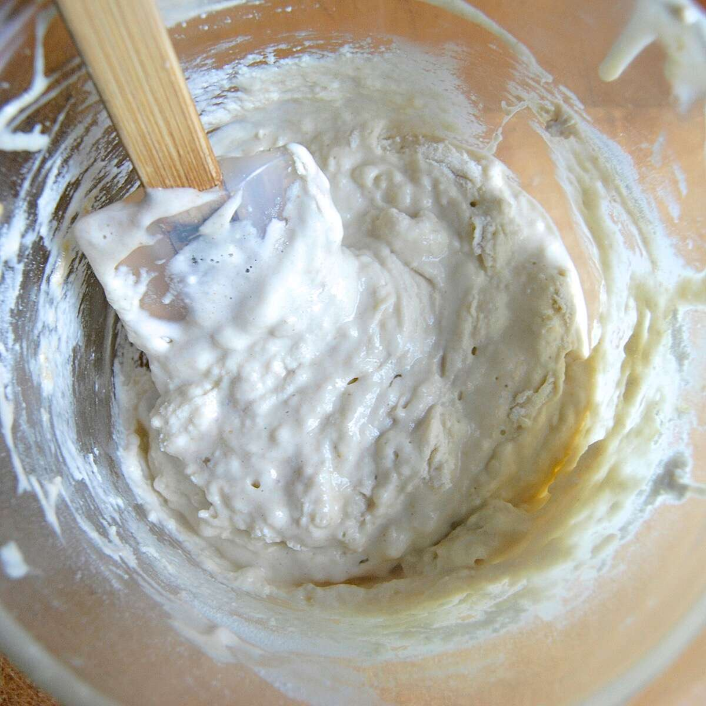

Fluffy Sourdough

Ready in ~6 hours
Ingredients
- Flour (white, whole wheat, or bread flour)
- warm water
- olive oil
- Salt
Amounts
- Twice as many cups of flour as water
- (I usually start with 2 cups flour, 1 cup water)
Preparation
- Pour all but ½ cup of your starter into a large bowl
- Add water and flour to bowl. Mix until dough is sticky.
- Add 1 cup flour and ½ cup water to remaining starter in jar. Mix until sticky.
- Cover both container and leave to rise for about 2 hours
- Repeat steps 1 and 3 (adding components to the first mixture)
Repeat step 3 and set starter aside or place in fridge. - Add about ¼ cup olive oil
- Knead the dough in the lightly oiled bowl. It will seem really sticky at first but keep kneading (and adding flour by hand if necessary) until it becomes smooth and elastic.
Form dough into a ball.
Cover and leave to rise for at least 4 hours. - Preheat oven to 425F
- Boil 4 cups water, then pour into brownie tray or other oven-safe dish
- Move dough to baking stone or oiled baking tray (split dough into two rounded loafs if desired)
- Place water dish and dough in oven
- Bake until internal temperature reaches 190 degrees (about 40 minutes)